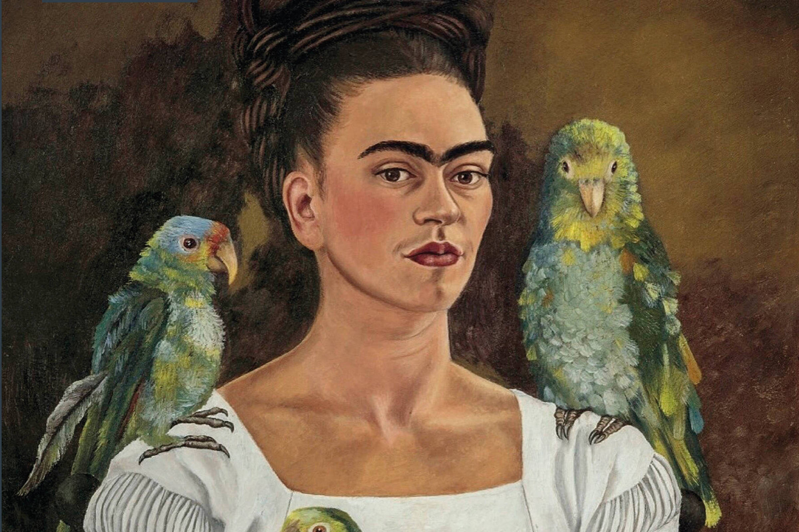

Considerada um ícone feminino nas artes
A pintora mexicana retratava em seus quadros as tragédias de sua vida e seus amores
-
Dentre os quadros mais famosos da artista são:
- Duas Fridas - 1939
- Diego e eu - 1949
- A coluna partida - 1944
- Autorretrato com cabelo cortado - 1940
Um pouco de sua história
Magdalena Carmen Frida Kahlo y Calderón foi uma pintora mexicana Frida Kahlo nasceu em 6 de julho de 1907 na casa de seus pais, conhecida como La Casa Azul (A Casa Azul), em Coyoacán, na época uma pequena cidade nos arredores da Cidade do México e hoje um distrito.eu pai, Guillermo Kahlo, cujo nome oficial era Carl Wilhelm Kahlo, nasceu em Pforzheim Alemanha, filho de Henriette Kaufmann e Jakob Heinrich Kahlo. A própria Frida afirmava que seu pai era de ascendência judaico-húngara, mas pesquisadores demonstraram que os pais dele não eram judeus, mas luteranos alemães. Guillermo Kahlo chegou ao México em 1891, aos 19 anos de idade, e logo mudou seu nome alemão, Wilhelm, para o equivalente em espanhol, "Guillermo".
A mãe de Frida, Matilde Gonzalez y Calderón, era uma católica devota de origem indígena e espanhola. Os pais de Frida se casaram logo após a morte da primeira esposa de Guillermo, durante o nascimento do seu segundo filho. Embora o casamento tenha sido muito infeliz, Guillermo e Matilde tiveram quatro filhas, sendo Frida a terceira. Ela tinha duas meio-irmãs mais velhas. Frida ressaltava que cresceu em um mundo cheio de mulheres. Durante a maior parte de sua vida, no entanto, Frida se manteve próxima do pai.
Em 1913, com seis anos, Frida contraiu poliomielite, a primeira de uma série de doenças, acidentes, lesões e operações que sofreu ao longo da vida. A poliomielite deixou uma lesão no seu pé direito, pelo que ganhou o apelido de Frida pata de palo (ou seja, Frida perna de pau). Passou a usar calças, depois longas e exóticas saias, que se tornaram uma de suas marcas pessoais. Ao contrário de muitos artistas, Kahlo não começou a pintar cedo. Embora o seu pai tivesse a pintura como um passatempo, Frida não estava particularmente interessada na arte como uma carreira. Entre 1922 e 1925, frequenta a Escola Nacional Preparatória do Distrito Federal do México e assiste a aulas de desenho e modelagem.
Em 1925, aos 18 anos, aprende a técnica da gravura com Fernando Fernandez. Então sofreu um grave acidente. Um bonde, no qual viajava, chocou-se com um trem. O pára-choque de um dos veículos perfurou-lhe as costas, causando uma fratura pélvica e hemorragia. Frida ficou muitos meses entre a vida e a morte no hospital, teve que operar diversas partes e reconstruir por inteiro seu corpo, que estava todo perfurado. Tal acidente obrigou-a a usar coletes ortopédicos de diversos materiais, e ela chegou a pintar alguns deles (como o colete de gesso da tela intitulada A Coluna Partida'). Durante a sua longa convalescença, começou a pintar, usando a caixa de tintas de seu pai e um cavalete adaptado à cama.
Em 1928, entrou no Partido comunista mexicano e conheceu o muralista Diego Rivera, com quem se casa no ano eguinte. Sob a influência da obra do marido, adotou o emprego de zonas de cor amplas e simples, num estilo propositadamente reconhecido como ingênuo. Procurou na sua arte afirmar a identidade nacional mexicana, por isso adotava com muita frequência temas do folclore e da arte popular do México. Entre 1930 e 1933 passa a maior parte do tempo em Nova Iorque e Detroit, com Rivera. Entre 1937 e 1939, recebeu Leon Trotski em sua casa de Coyoacán.
Em 1938, André Breton qualifica sua obra de surrealista em um ensaio que escreveu para a exposição de Kahlo na galeria Julien Levy de Nova Iorque. Não obstante, ela mesma declarou mais tarde: Pensavam que eu era uma surrealista, mas eu não era. Nunca pintei sonhos. Pintava a minha própria realidade. Em 1939, expõe em Paris na galeria Renón et Colle. A partir de 1943, dá aulas na escola La Esmeralda, no D.F. (México).
Em 1953, a Galeria de Arte Contemporânea desta mesma cidade organiza uma importante exposição em sua honra. Alguns de seus primeiros trabalhos incluem o Auto-retrato em um vestido de veludo (1926), Retrato de Miguel N. Lira (1927), Retrato de Alicia Galant (1927) e Retrato de minha irmã Cristina (1928). Casa-se aos 22 anos com Diego Rivera, em 1929, um casamento tumultuado, visto que ambos tinham temperamentos fortes e casos extraconjugais. Kahlo, que era bissexual, teve um caso com Leon Trotski depois de separar-se de Diego. Rivera aceitava abertamente os relacionamentos de Kahlo com mulheres, mesmo elas sendo casadas, mas não aceitava os casos da esposa com homens. Frida descobre que Rivera mantinha um relacionamento com sua irmã mais nova, Cristina.
Após essa outra tragédia de sua vida, separa-se dele e vive novos amores com homens e mulheres, mas em 1940 une-se novamente a Diego. O segundo casamento foi tão tempestuoso quanto o primeiro, marcado por brigas violentas. Ao voltar para o marido, Frida construiu uma casa igual à dele, ao lado da casa em que eles tinham vivido. Essa casa era ligada à outra por uma ponte, e eles viviam como marido e mulher, mas sem morar juntos. Encontravam-se na casa dela ou na dele, nas madrugadas.
Sugestões: